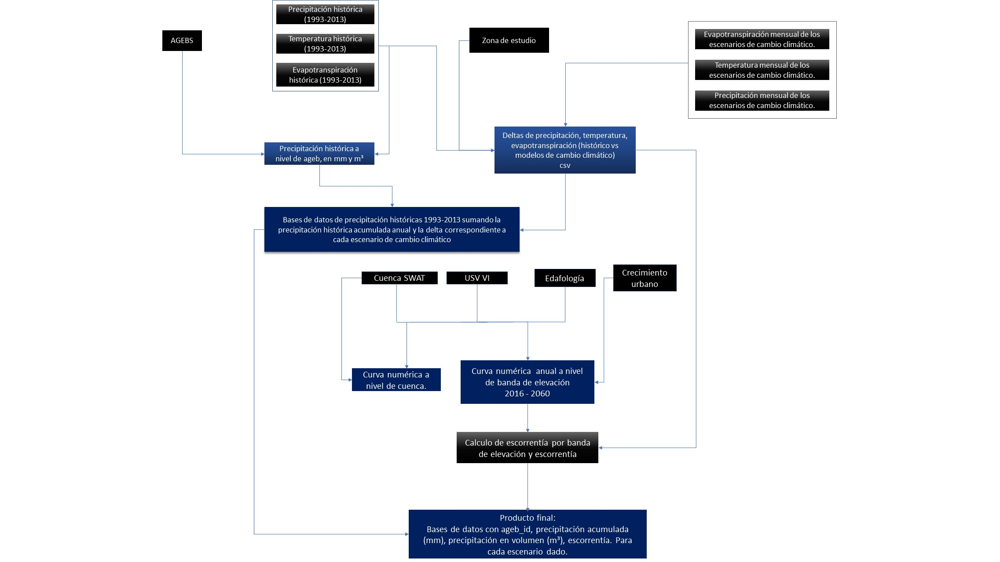

Balance hídrico¶
Este modelo simula el escurrimiento superficial de las 244 subcuencas altas en la periferia de la Ciudad de México. Cada subcuenca se dividió hasta en seis bandas de elevación para estimar el escurrimiento acumulativo generado por la heterogeneidad de la precipitación, la evapotranspiración y la cobertura vegetal. Este modelo funciona con base en la curva numérica (CN) del método SCS-CN desarrollado por el Servicio de Conservación de Suelos de Estados Unidos.
{kind=link}
Insumos¶
Zona de estudio¶
- swat_master.shp archivo vectorial que contine 244 subcuencas hidrológicas de la zona de estudio E.Vivoni
- swat_area.shp archivo vectorial que contiene la región de estudio para todo el valle de México
- swat_EB_insct_diss.shp archivo que contiene las bandas de elevaciones separadas por poligonos para cada una de las cuencas.
- Agebs de la ciudad de México INEGI
- Uso de suelo y vegetación serie VI INEGI
- Edafología INEGI
Datos históricos de precipitación, temperatura y evapotranspiración¶
- Prec precipitación diaria en formato raster para el intervalo de tiempo de 01 de enero de 1993 al 31 de diciembre del 2013 - Livneh et al 2015
- TA temperatura promedio diaria en formato raster para el intervalo de tiempo de 01 de enero de 1993 al 31 de diciembre del 2013 - Livneh et al 2015
- PET evapotranspiración promedio diaria en formato raster para el intervalo de tiempo de 01 de enero de 1993 al 31 de diciembre del 2013 - Livneh et al 2015
Datos de escenarios de cambio climático¶
- he45Prec55 12 archivos raster (1 por mes) que expresan el promedio de la precipitación mensual total expresada en mm. RCP 4.5
- he45Prec85 12 archivos raster (1 por mes) que expresan el promedio de la precipitación mensual total expresada en mm. RCP 4.5
- he85Prec55 12 archivos raster (1 por mes) que expresan el promedio de la precipitación mensual total expresada en mm. RCP 8.5
- he85Prec85 12 archivos raster (1 por mes) que expresan el promedio de la precipitación mensual total expresada en mm. RCP 8.5
- he45TA55 12 archivos raster (1 por mes) que expresan el promedio de la temperatura promedio mensual total expresada en °C. RCP 4.5
- he45TA85 12 archivos raster (1 por mes) que expresan el promedio de la temperatura promedio mensual total expresada en °C. RCP 4.5
- he85TA55 12 archivos raster (1 por mes) que expresan el promedio de la temperatura promedio mensual total expresada en °C. RCP 8.5
- he85TA85 12 archivos raster (1 por mes) que expresan el promedio de la temperatura promedio mensual total expresada en °C. RCP 8.5
Nota
he HadGEM2-ES 2075-2099 Modelo climático del sistema terrestre
RCP 4.5: Escenario de estabilización. El forzamiento radiativo se estabiliza un poco luego del 2100. La temperatura muy probablemente excede los 2ºC.
RCP 8.5: Incremento de las emisiones de GEI a lo largo del tiempo. La temperatura probablemente no excede los 4ºC.
Issues¶
- #26 calcular las escorrentias de cada escenario de precipitación y urbanización, para cada cuenca swat por año
- #27 implementar un algoritmo que recalcule el numero de curva dependiendo de el escenario urbano
- #28 entender la estructura de datos y el procedimiento que usaron Vivoni y sus coloboradores para calcular la curva numérica
- #29 calcular las escorrentías con los números de curva actuales para cada cuenca swat
- #55 Hacer un script para preparar las capas de urbanización para ser usadas en el recálculo del número de curva
- #57 calcular los números de curva para cada año de cada escenario de crecimiento urbano
- #59 Hacer un script para calcular la evapotranspiración potencial a partir de la temperatura
- #81 Generar una capa para el cálculo de curva númerica utilizando solo la serie VI de INEGI
- #82 Calcular número y áreas de las cuencas con urbanización para el escenario histórico, 2040 y 2060
- #86 Generar experimentos de simulación para calcular escurrimiento bajo los distintos escenarios de urbanización y de cambio climático
- #91 Generar un dataframe que contenga los datos de precipitación y escorrentia por ageb para el escenario 8.5_8.5
- #96 Generar para cada escenario de escorrentía un csv con precipitación anual por ageb y escorrentía anual por ageb
Códigos¶
- c_01_promedios_historico_prec.py
- c_02_promedios_historico_pet.py
- c_03_promedios_historico_ta.py
- c_04_calculo_datos.py
- c_05_prec_vol_v2.py
- c_06_urb_a_curvan_v3.py
- c_07_evapotranspiracion_v2.py
- c_08_curva_numerica_usv_vi.py
- c_09_experimentos.R
- c_10_build_dataframe_nf_ff_v2.py
- c_11_build_dataframe_nf_ff_vol_v2.py
Nota
c_06 y c_08 dependen del siguiente archivo de funciones: curvaN.py
Salidas¶
- df_prec_precvolm3_escorrentias_excl_0_ff45.csv
- df_prec_precvolm3_escorrentias_excl_0_ff85.csv
- df_prec_precvolm3_escorrentias_excl_0_nf45.csv
- df_prec_precvolm3_escorrentias_excl_0_nf85.csv
- df_prec_precvolm3_escorrentias_excl_total_ff45_c.csv
- df_prec_precvolm3_escorrentias_excl_total_ff85_c.csv
- df_prec_precvolm3_escorrentias_excl_total_nf45_c .csv
- df_prec_precvolm3_escorrentias_excl_total_nf85_c.csv
- df_prec_precvolm3_escorrentias_noairport_no11_ff45.csv
- df_prec_precvolm3_escorrentias_noairport_no11_ff85.csv
- df_prec_precvolm3_escorrentias_noairport_no11_nf45_c.csv
- df_prec_precvolm3_escorrentias_noairport_no11_nf85.csv